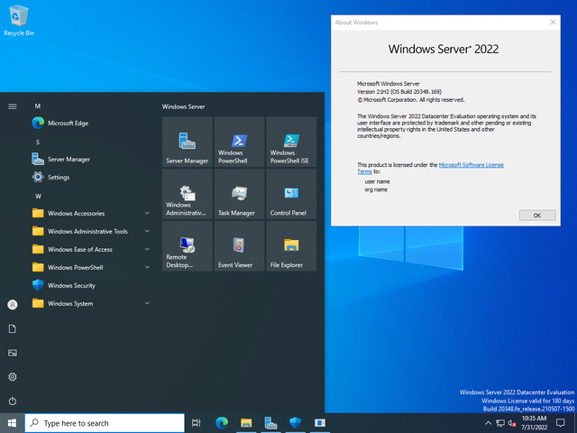

Windows

Windows Server 2022 або Windows Server 2022 Edition — це десятий і останній випуск основного каналу довгострокового обслуговування (LTSC) операційної системи Windows Server від Microsoft у складі сімейства операційних систем Windows NT. Про це було оголошено на заході Microsoft Ignite з 2 по 4 березня 2021 року. Він був випущений 18 серпня 2021 року майже через три роки після Windows Server 2019 і за кілька місяців до Windows 11.Windows Server 2022 походить від кодової бази Windows 10 і, як і його попередники, сумісний лише з 64-розрядними процесорами.
Windows Server 2022 is derived from the Windows 10 codebase and, like its predecessors, is only compatible with 64-bit processors.